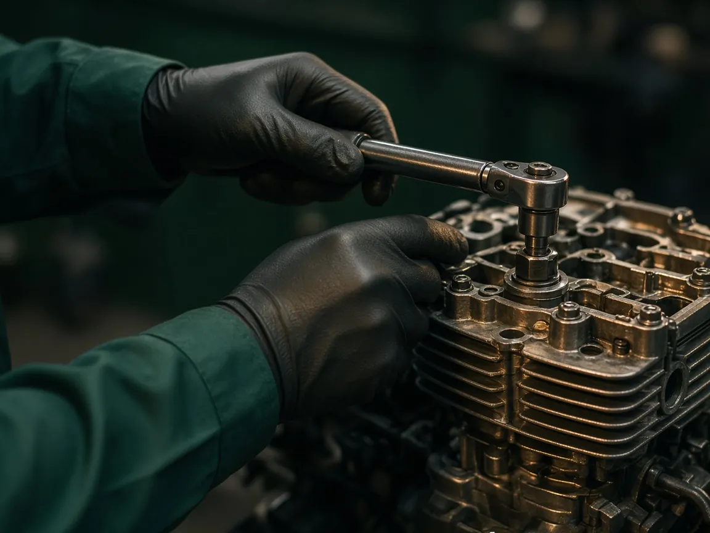
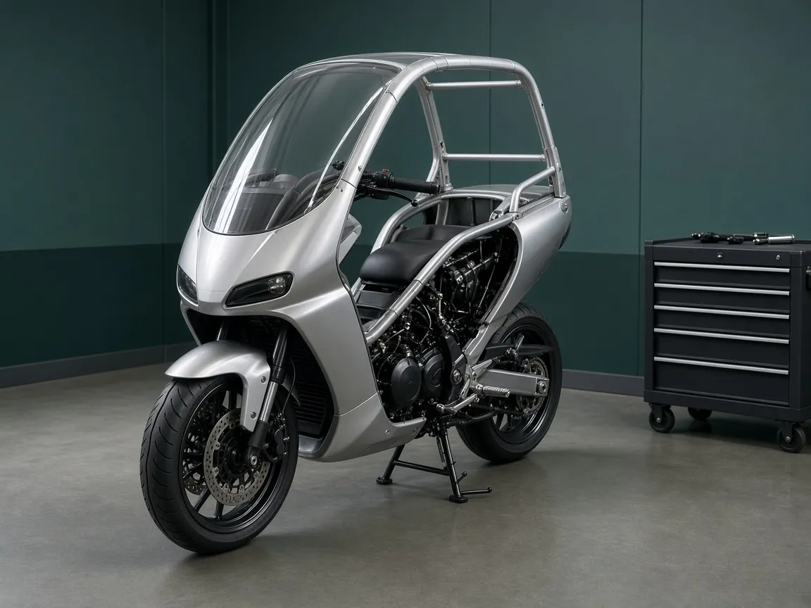
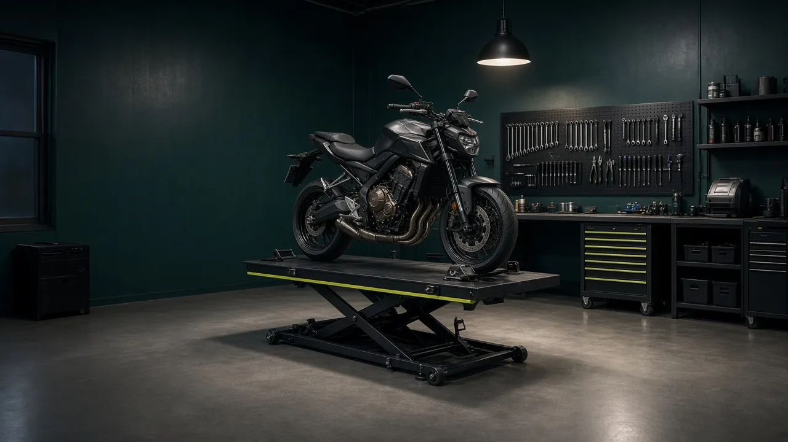

Mécanique moto toutes marques et spécialiste BMW C1
Sport Garage 78 est un atelier qui ne travaille que sur les motos : réparation après accident, recherche de panne, moteur, révisions. Un vrai savoir-faire de mécanicien moto, à Conflans-Sainte-Honorine.
- Réparation après collision
- Diagnostic et dépannage moteur
- Entretien et révisions
- Moteur et béquilles BMW C1
Ce qui caractérise l’atelier
100 % moto
Un atelier consacré à la moto. Les scooters ne sont pas pris en charge.
Toutes marques
Japonaises et européennes : BMW, Honda, Yamaha, Ducati, Triumph…
Spécialiste BMW C1
Moteur, entretien et mécanismes de béquille propres au C1.
Conflans et alentours
Yvelines et Val-d’Oise proche : Poissy, Cergy, Herblay…
La réparation moto, de la panne au moteur
Accident, voyant allumé, moteur qui tourne mal ou simple révision : l’atelier prend en charge la mécanique de votre moto, quelle que soit sa marque.

Diagnostic et dépannage
Recherche de panne mécanique et moteur, contrôle des points de sécurité.
Voir le détail
Moteur toutes marques
Réparation et entretien moteur sur motos japonaises et européennes.
Voir le détail
SpécialitéSpécialiste BMW C1
Moteur, révisions et systèmes de béquilles spécifiques au C1.
La page C1Marques prises en charge à l’atelier — et bien d’autres. Voir les marques
Les problèmes de moto que nous traitons
Un symptôme ne s’ignore pas sur deux roues. Voici les situations les plus fréquentes qui amènent une moto chez un mécanicien.
- Moto endommagée après une chute ou une collision
- Démarrage difficile ou impossible
- Moteur qui broute, cale ou manque de puissance
- Bruit mécanique inhabituel
- Fuite d’huile ou de liquide
- Voyant moteur allumé
- Révision dépassée ou kilométrage élevé
- Béquille de BMW C1 qui force ou accroche

Spécialiste BMW C1 près de Conflans
Le BMW C1 n’est pas un deux-roues comme les autres : toit, arceau, carénage enveloppant et un système de béquille qui lui est propre. Sport Garage 78 en a fait sa spécialité.
- Réparation et entretien du moteur
- Systèmes de béquilles et mécanismes
- Révisions et remise en route
- Diagnostic des pannes
Un bruit suspect, une panne, une moto à remettre en route ?
Décrivez le problème par téléphone : l’atelier vous dit comment procéder et quand amener la moto.
Votre moto à l’atelier, en quatre étapes
Un fonctionnement simple, de l’appel à la remise des clés.
Nous contacterVous nous appelez
Vous décrivez la moto, les symptômes ou les dégâts. On convient ensemble du dépôt à l’atelier.
Diagnostic
La moto est examinée pour trouver l’origine réelle de la panne, du bruit ou des dommages.
Explications avant travaux
Vous savez ce qui doit être fait, et pourquoi, avant toute intervention.
Réparation et essai
Les travaux sont réalisés puis la moto est contrôlée avant de vous être rendue.
Garage moto pour Conflans-Sainte-Honorine et ses alentours
L’atelier est installé à Conflans-Sainte-Honorine (78). Les motards viennent de toute la boucle de Seine, côté Yvelines comme côté Val-d’Oise.
La carte n’a pas pu s’afficher. Zone desservie : Conflans-Sainte-Honorine et les communes listées ci-contre, dans un rayon d’environ 11 km.
Cliquez sur la carte pour activer le zoom à la molette. Repère : centre-ville de Conflans-Sainte-Honorine ; cercle d’environ 11 km.
Atelier
- Conflans-Sainte-Honorine (78)
Yvelines (78)
- Poissy
- Andrésy
- Achères
- Maisons-Laffitte
- Saint-Germain-en-Laye
Val-d’Oise (95)
- Herblay-sur-Seine
- Cergy
- Éragny
Et les communes alentour : appelez l’atelier pour vérifier la prise en charge de votre moto.
Appeler le 01 70 82 63 94